8.3 Variationen: Mehrband-Maschinen, nichtdeterministische Maschinen
Turingmaschinen mit mehreren Bändern
Im letzten Teilkapitel ist Ihnen bestimmt aufgefallen, dass es auffallend lästig ist, selbst für einfache Sprachen wie
$$
\begin{align*}
\{a^n b^n c^n \ | \ n \geq 0 \}
\end{align*}
$$
oder
$$
\begin{align*}
\{wcw
| \ w \in \{a,b\}^*\}
\end{align*}
$$
Turingmaschinen zu programmieren. Ein Grund dafür ist, dass die Maschine nur an einer Position des Bandes lesen und schreiben kann und man deswegen ständig zwischen verschiedenen Stellen hin- und herfahren muss. Es bietet sich daher an, an etwas allgemeineres Modell einer Rechenmaschine zu definieren, das dann auch leichter zu programmieren ist. Dies ist die Mehrband-Turingmaschine. Eine Mehrband-Turingmaschine ist wie eine Turingmaschine, nur dass sie statt einem $k$ viele Bänder und somit auch $k$ viele Schreib-Lese-Köpfe hat. Die Zustandsübergangsfunktion $\delta$ hat somit auch die Signatur
$$
\begin{align*}
\delta : Q \times \Gamma^k
\rightarrow Q \times \Gamma^k \times \lsr^k
\end{align*}
$$
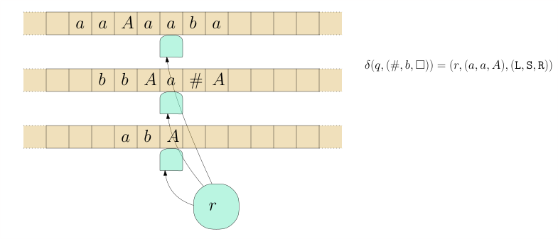


Beispiel 8.3.1 Entwerfen wir nun eine Turingmaschine für die Palindromsprache
$$
\begin{align*}
L := \{ w \in \{a,b\}^* \ | \ w = w^R \} \ ,
\end{align*}
$$
In Beispiel 8.2.2 haben wir dafür eine Einband-Turingmaschine geschrieben. Deren Nachteil war, dass sie ständig zwischen dem linken und rechten Rand hin-und-herlaufen musste. Bauen wir nun eine Mehrband-Turingmaschine. Diese arbeitet in drei einfachen und kurzen Phasen:
-
copy: kopiert das $w$ auf das zweite Band -
rewind: bewegt den Kopf des ersten Bandes zurück zum Anfang -
compare: schaut, ob erstes und zweites Band den gleichen Inhalt haben.
Den "Quelltext" für turingmachinesimulator.com finden Sie in palindrome-multiple-tapes.txt.
Übungsaufgabe 8.3.1
Schreiben Sie eine Mehrband-Turingmaschine, die Binärzahlen
addiert. Wenn also beispielsweise
1010+110
auf dem ersten Band
(Eingabeband) steht, dann soll nach Abschluss der Berechnung das
Ergebnis auf dem Ausgabeband stehen, also
10000.
Tip.
Verwenden Sie drei Bänder. Sei der Bandinhalt
$x+y$.
In einer
ersten Phase kopieren Sie $x$ auf das zweite Band. In der
nächsten Phase gehen Sie ans Ende von
$y$.
Dann addieren Sie
nach den Regeln der Binäraddition. Ob "1 gemerkt" gilt oder
nicht, können Sie in Ihrem internen Zustand speichern. Eine Regel
wäre also zum Beispiel:
carry1, 0, 0, _ carry0, 0, 0, 1,<,<,< carry1, 0, 1, _ carry1, 0, 1, 0,<,<,<
Ein lästiges Detail ist, dass $y$ kürzer sein könnte als $x$ und
Sie daher in das
+
reinlaufen könnten; wenn $x$ kürzer ist als
$y$,
dann könnten Sie auf dem zweiten Band in ein $\square$
reinlaufen. Wie ist dieser Fall zu behandeln?
Berechnete Sprache, berechnete Funktion. Die Begriffe des Akzpetierens und Ablehnens definieren wir genau wie für die Einband-Turingmaschinen. Eine formale Definition der Konfiguration ersparen wir uns jedoch. Wenn unsere Mehrband-Turingmaschine nicht nur akzeptieren / ablehnen, sondern etwas berechnen soll, also eine Funktion
$$
\begin{align*}
f :
\Sigma_1 \rightarrow \Sigma_2 \ ,
\end{align*}
$$
dann bauen wir sie per Konvention so, dass sie ein designiertes Ausgabeband hat, auf dem nach Abschluss der Berechnung das Ausgabewort $f(x)$ steht.
Einband-Maschinen können Mehrband-Maschinen simulieren
Es stellt sich heraus, dass mehrere Bänder zwar ein praktisches Feature sind, aber nicht wirklich mehr Ausdruckskraft verlangen; was eine Mehrband-Turingmaschine schafft, schafft eine Einband-Turingmaschine auch.
Theorem 8.3.2 (Einband-Turingmaschine simuliert Mehrband-Turingmaschine). Sei $M$ eine Turingmaschine mit $k$ Bändern, wovon eines ein designiertes Ausgabeband ist. Dann gibt es eine Einband-Turingmaschine $M'$ mit folgenden Eigenschaften:
-
$M'(x)$ akzeptiert/lehnt ab/terminiert nicht genau dann, wenn $M(x)$ akzeptiert/ablehnt/nicht terminiert.
-
Wenn $M(x)$ akzeptiert und $y$ der Bandinhalt des Ausgabebandes ist, dann akzeptiert $M'(x)$ auch, und der Bandinhalt (des einzigen Bandes, es gibt ja nur eins) ist $y$.
In anderen Worten: $M'$ simuliert $M$.
Beweis. 8.3.3 Der erste Trick ist, dass wir die $k$ Bänder von $M$ "zusammenkleben" in ein neues Band, in welcher jede Zelle $k$ Symbole enthalten kann:
Das Problem sind nun die Köpfe. Wenn wir diese Idee naiv umsetzen würden, hätte unsere Maschine $M'$ zwar ein Band, dafür drei Köpfe auf diesem:
Wir lösen dies, indem wir die Kopfpositionen in das Band selbst reinschreiben:
Das neue Bandalphabet ist also nicht $\Gamma^k$ sondern $(\Gamma \times \{\texttt{head}, \texttt{nohead}\} )^k$. Wo steht nun aber denn der Kopf von $M'$? Jetzt kommt der schwierige Teil: um einen Schritt von $M$ zu simulieren, muss $M'$ von ganz links nach ganz rechts laufen und alle Informationen über die $k$ $M$-Köpfe sammeln. Dann von rechts nach links gehen und die ausführen.
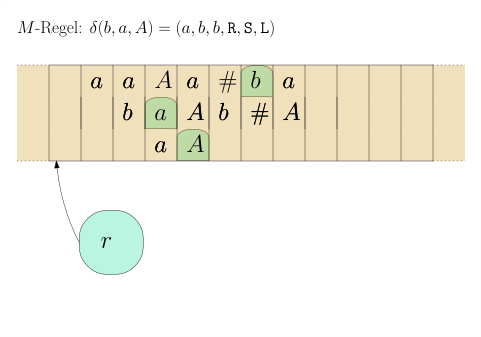
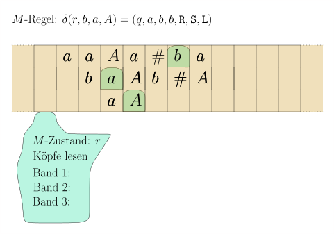
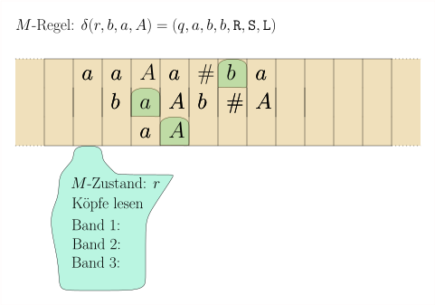

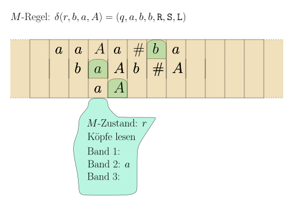
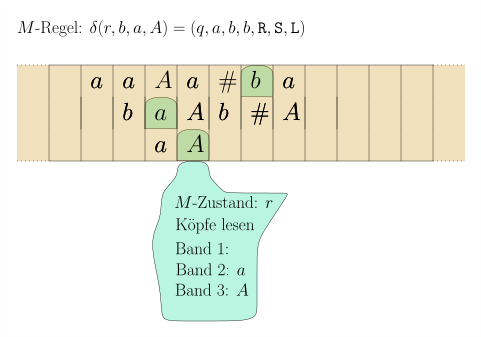
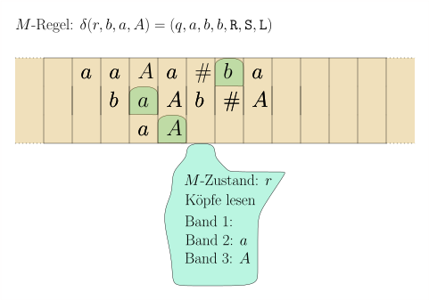
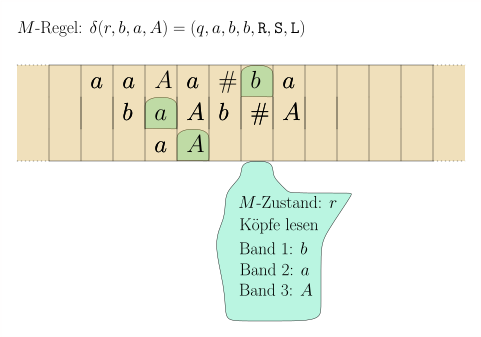

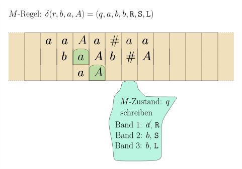
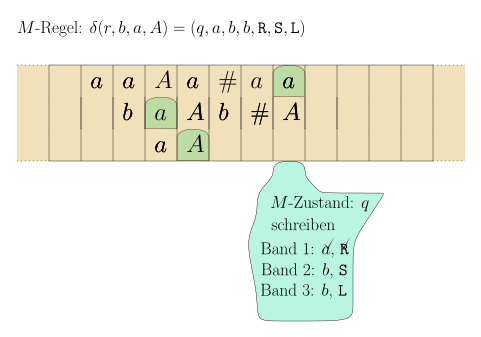
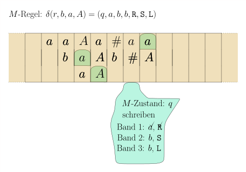
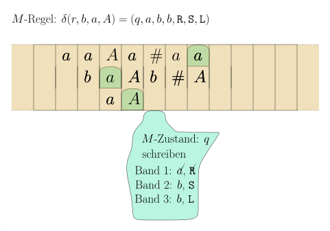
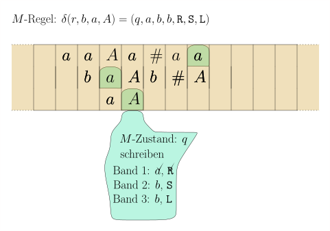
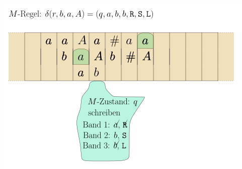
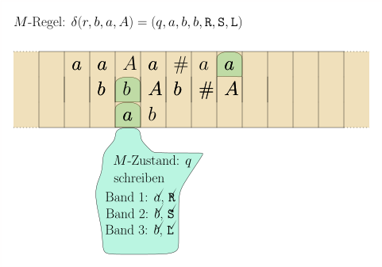
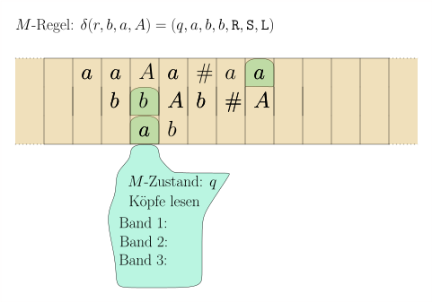
Wir müssen also die Zustandsmenge deutlich erweitern; so muss
sie speichern können, ob wir ein Symbol bereits gelesen haben; ob
wir ein Symbol bereits geschrieben haben und ob wir den Kopf
bereits entsprechend verschoben haben. Für eine
Rechtsverschiebung müssen wir uns zusätzlich noch merken, dass
wir sie gerade durchführen und für welches Band. All dies ist
viel, aber immer noch endlich. Wir können alles in einer
endlichen Zustandsmenge $Q'$ speichern. Wenn der $M$ -Zustand
(der natürlich auch im
$M'$-Zustand
gespeichert
ist),accepterreicht
hat, dann macht $M'$ noch eine
Aufräumphase, in welcher sie alle Symbole, die nicht zum
Ausgabeband gehören, durch $\square$ ersetzt. Dann wechselt sie
in ihren eigenen akzeptierenden Zustand
accept'.A\(\square\)
Einfügen versus Überschreiben
Folgende Aufgabe ist auf einer Einband-Turingmaschine sehr leicht: gegeben ein Eingabewort $w \in \{a,b\}^*$ , ersetze jedes $b$ durch ein $c$. In der Syntax von turingmachinesimulator.com:
name: replace_b_by_c init: init accept: accept init, a init, a, > init, b init, c, > init, _ accept, _, >
Ungleich schwieriger ist die Aufgabe, jedes $b$ durch ein $bc$ zu ersetzen, weil wir hier etwas einfügen wollen. Auf einer Einband-Turingmaschine müssen wir für jedes $b$ alles, was rechts davon kommt, um eine Zelle nach rechts verschieben. Meinen Quelltext finden sie in replace-b-by-bc.txt. Können wir unserer Turingmaschine die Funktionalität geben, eine Zelle einzufügen und alles von Kopf bis zum linken Ende um eins nach links zu verschieben bzw. das analoge, aber nach rechts? Wir sind freie Menschen, wir können definieren, was wir wollen, müssen uns aber zwei Fragen stellen:
-
Ist das immer noch ein plausibles Modell einer Rechenmaschine? Ist also unser neue Funktionalität physikalisch realisierbar?
-
Verleiht es wirklich neue Funktionalität, oder ist es nur Syntaxzucker?
In diesem Fall ahnen Sie es wohl bereits: es ist nur Syntaxzucker. Die Funktionalität des Einfügens/Verschiebens können wir leicht mit zwei Bändern simulieren. Wir halten uns einfach an die Konvention, dass auf Band 1 der Kopf immer auf dem linkesten Zeichen steht und auf Band 2 der Kopf jenseits des rechtesten.
$$
\begin{align*}
\delta(q,x) = (r,y,\texttt{R})
\end{align*}
$$
wird dann
q, x, _ r, _, x, >, >
Eine Linksbewegung ist etwas schwieriger zu implementieren. Aus $\delta(q,x) = (r,y,\texttt{L})$ wird
q, x, _
r', x, _, -, -
r', _, c
r, c, _ // für jedes Zeichen c
Nehmen Sie die Beispielmaschine go-left-go-right.txt, geben Sie sie auf turingmachinesimulator.com ein und starten Sie sie mit dem Eingabewort $xxx$. Ein neues Zeichen links vom Kopf einfügen ist nun einfach: aus
$$
\begin{align*}
\delta(q,x) = \textnormal{Zustand $r$, schreibe $y$ und
füge $z$ links vom Kopf ein}
\end{align*}
$$
wird
q, x, _
r'', _, z, >, >
r'', c, _
r, c, y, -, > // für jedes Zeichen c
Sie können sich meine Implementierung in
insert-z-before-y.txt
ansehen. Geben Sie beispielsweise
xxyxyyxx
als Eingabewort ein.
Wir können von nun an also so tun, als hätten unsere
Turingmaschinen die Möglichkeit, zusätzliche Zellen einzufügen. In
einer konkreten Implementierung müssten wir dafür allerdings jedes
Band durch zwei Bänder ersetzen. Alternativ können Sie sich eine
Turingmaschine vorstellen, die statt $k$ Bändern einfach $2k$
Stapel hat.
Die Dictionary-Maschine
Ein fundamentale Datenstruktur beim Programmieren sind Dictionaries, die Key-Value-Paare speichern:
user@home:~$ python -i >>> dict = {"karl" : 42, "eva" : 35, "werner" : 20} >>> dict["eva"] 35 >>>
Im Zweifelsfall sind diese als Hashmaps oder Rot-Schwarz-Bäume oder B-Bäume implementiert. Hier interessiert uns nicht so sehr die Laufzeit, sondern einfach die Funktionalität. Können wir für Dictionaries eine Turingmaschine implementieren?
Übungsaufgabe 8.3.2 Schreiben Sie auf turingmachinesimulator.com eine Mehrband-Turingmaschine, die Inputs der Form
$$
\begin{align*}
k [ k_1 : v_1; k_2 : v_2; \dots ; k_n : v_n ]
\end{align*}
$$
entgegennimmt, für $k, k_1, \dots, k_n, v_1, \dots, v_n \in \{0,1\}^n$, also $\Sigma = \{0,1, \texttt{:}, \texttt{;}, \texttt{[}, \texttt{]}\}$ und akzeptiert, wenn es ein $i$ gibt mit $k = k_i$ und in diesem Falle $v_i$ auf das Ausgabeband schreibt. Tip: Kopieren Sie erst einmal den gesuchten Schlüssel $k$ auf das zweite Band. Dann können Sie bequem den Schlüssel $k_i$ auf dem ersten Band mit dem auf dem zweiten Band vergleichen. Wenn Sie es sich einfach machen wollen, nehmen Sie einfach mal an, dass alle Schlüssel gleiche Länge haben. Das erspart Ihnen gefühlt 20 Zeilen im Programmcode der Turingmaschine.
Nichtdeterministische Turingmaschinen
Bereits im Kapitel über reguläre Sprachen haben wir gesehen, dass Nichtdeterminismus hilfreich ist, wenn wir Dinge beschreiben wollen, auch wenn es kein realistisches Modell für Rechenmaschinen darstellt. Die Sprache aller Wörter über $\{a,b\}$ , die das Teilwort $aababaa$ enthalten, kann man beispielsweise leicht mit dem folgenden Automaten beschreiben:
Es ist klar, was dieser Automat erlaubt. Einen deterministischen Automaten für die gleiche Sprache zu entwerfen (ohne systematisch über den nichtdeterministischen zu gehen) wird schnell chaotisch, und Sie werden sich in den vielen Fallunterscheidungen verlieren. Andererseits haben wir für endliche Automaten gezeigt, dass die deterministischen und nichtdeterministischen Varianten tatsächlich gleichmächtig sind (Potenzmengenkonstruktion). Für die Kellerautomaten, die für kontextfreie Sprachen relevant sind, galt das nicht (einen Beweis haben wir allerdings in der Vorlesung nicht durchgenommen). Wie sieht es nun für Turingmaschinen aus? Um nichtdeterministische Turingmaschinen zu definieren, müssen wir die Zustandsübergangsfunktion $\delta$ zu einer Zustandsübergangsrelation machen. Statt $\delta: Q \times \Gamma \rightarrow Q \times \Gamma \times \lsr$ also nun
$$
\begin{align*}
\delta \subseteq (Q \times \Gamma) \times (Q \times \Gamma \times
\lsr) \ .
\end{align*}
$$
Und statt $\delta(q,x) = (r,y,\texttt{D})$ schreiben wir nun $(q,x) \step{\delta} (r,y,\texttt{D})$. Wir beschränken uns zunächst auf Einband-Turingmaschinen. Für Konfigurationen $C \in \Gamma^* \times Q \times\Gamma^*$ haben wir keine erweiterte Zustandsübergangsfunktion $\delta(C) = C'$, wo $C'$ die Folgekonfiguration ist, sondern eine erweiterte Zustandsübergangsrelation:
$$
\begin{align*}
C \Step{} C'
\end{align*}
$$
Wobei nun dank Nichtdeterminismus mehrere Folgekonfigurationen $C'$ geben kann (oder eben mal auch gar keine). Wir schreiben
$$
\begin{align*}
C \Step{}^* C'
\end{align*}
$$
wenn wir von $C$ in einer Folge von Schritten nach $C'$ kommen können, also
$$
\begin{align*}
C =
C_0 \Step{} C_1 \Step{} C_2 \Step{} \dots \Step{} C'
\end{align*}
$$
Wir sagen auch: Die Konfiguration $C'$ ist von $C$ aus erreichbar. Für ein Eingabewort $x$ sie $C_x := \texttt{start} x$ die Startkonfiguration. Eine nichtdeterministische Turingmaschine akzeptiert $x$, wenn es eine akzeptierende Endkonfiguration $C_{\rm accept}$ gibt mit
$$
\begin{align*}
C_x \Step{}^* C_{\rm
accept}
\end{align*}
$$
wenn es also (mindestens) eine akzeptierende Konfiguration gibt, die von $C_x$ aus erreichbar ist. Dabei kann es mehrere erreichbare akzeptierende Konfigurationen geben, Es kann sogar eine ablehnende Konfiguration $C_x \Step{}^* C_{\rm reject}$ geben. Spielt keine Rolle: solange es einen Weg $C_x \Step{}^* C_{\rm accept}$ gibt, sagen wir, dass $M$ das Eingabewort akzeptiert.
Definition 8.3.4 (Akzeptieren und Entscheiden bei nichtdeterministischen Turingmaschinen). Eine nichtdeterministische Turingmaschine $M$ akzeptiert die Sprache $L$ wenn
$$
\begin{align*}
x \in L \Longleftrightarrow M \textnormal {
akzeptiert } x
\end{align*}
$$
Für jedes $x \not \in L$ gibt es also keine akzeptierende Konfiguration $C$ mit $C_x \Rightarrow C$. Die Turingmaschine $M$ entscheidet die Sprache $L$, wenn sie sie akzeptiert und es keine unendlich langen Ketten
$$
\begin{align*}
C_x \Step{} C_1 \Step{} C_2 \Step{} \dots
\end{align*}
$$
gibt.
⚠⚠ Oft wird händeringend versucht, zu erklären, was denn eine nichtdeterministische Turingmaschine tut. Da lesen Sie dann beispielsweise, dass die alle Möglichkeiten gleichzeitig ausprobiert oder den richtigen Pfad von einem Engel gesagt bekommt oder errät. Ich stelle mir lieber vor, dass eine nichtdeterministische Turingmaschine gar nichts "tut" sondern Spielregeln definiert, wie man "ziehen" kann. Man gewinnt, wenn man in einer akzeptierenden Konfiguration landet. ⚠⚠
Beispiel 8.3.5 Beim Teilsummenproblem haben wir eine Liste von Waren (alles Unikate) mit Preisen $p_1, p_2, \dots, p_n$ und ein Guthaben $g$ gegeben und wollen wissen, ob wir unser Guthaben exakt ausgeben können. Ob es also eine Teilmenge $I \subseteq [n]$ von Waren gibt, die genau $g$ kostet:
$$
\begin{align*}
\textnormal{gibt es ein } I \subseteq [n]
\textnormal{ mit } \sum_{i \in I} p_i = g \textnormal{?}
\end{align*}
$$
Um das als formale Sprachen bzw. Entscheidungsproblem zu formalisieren, müssen wir uns eine Codierung überlegen. Preise sind ganze Zahlen (in Cent, wenn Sie so wollen), in Dezimalschreibweise dargstellt. Waren sind mit einem $\#$ separiert. Nach den Waren kommt ein $:$ und dann das Guthaben. Wenn also beispielsweise die Waren die Preise 65, 8, 22, 19, 7, 58, 30, 1, 13, 38 haben und unser Guthaben 194 ist, dann würden wir das als Wort
$$
\begin{align*}
\#65\#8\#22\#19\#7\#58\#30\#1\#13\#38:194
\end{align*}
$$
über dem Alphabet $\Sigma = \{0,1,2,3,4,5,6,7,8,9,\#,:\}$ codieren. Das Wort ist in unserer Sprache $L$ enthalten, wenn es nun eben eine Teilmenge gibt, die sich genau zu 194 aufsummiert. Entwerfen wir nun eine nichtdeterministische Turingmaschine $M$ für diese Sprache. $M$ geht von links nach rechts alle Waren durch. Jedes Mal, wenn ein Preis beginnt, haben wir die Möglichkeit, diesen Preis auf das zweite Band zu kopieren (die Ware zu kaufen) oder eben nicht: also
$$
\begin{align*}
(\texttt{choose}, \#, \square)
&\rightarrow (\texttt{buy}, \#, +, \texttt{R}, \texttt{R})\\
(\texttt{choose}, \#, \square)&\rightarrow (\texttt{skip}, \#,
\texttt{R}, \texttt{S}) \\ \\ (\texttt{buy}, c, \square)&
\rightarrow (\texttt{buy}, c, c, \texttt{R}, \texttt{R}) \tag{für
jedes \(c \in \{0,\dots,9\}\)}\\ (\texttt{buy}, \#, \square)&
\rightarrow (\texttt{choose}, \#, \square, \texttt{S}, \texttt{S})
(\texttt{skip}, c, \square)&\rightarrow (\texttt{skip}, c,
\square, \texttt{R}, \texttt{S}) \tag{für jedes \(c \in
\{0,\dots,9\}\)}\\ (\texttt{skip}, \#, \square)&\rightarrow
(\texttt{choose}, \#, \square, \texttt{S}, \texttt{S}) \\ \\
(\texttt{buy}, :, \square)&\rightarrow (\texttt{add}, :, \square,
\texttt{S}, \texttt{S}) \\ (\texttt{skip}, :, \square)&\rightarrow
(\texttt{add}, :, \square, \texttt{S}, \texttt{S}) \\
\end{align*}
$$
Dies erlaubt uns zum Beispiel, bei Eingabe $\#65\#8\#22\#19\#7\#58\#30\#1\#13\#38:194$ eine Konfiguration zu erreichen, wo auf dem ersten Band der Kopf auf dem : steht und auf dem zweiten Band
$$
\begin{align*}
+ 6 + 19 + 58 + 1 + 13
\end{align*}
$$
aber eben auch jede beliebige andere Summe. Im Zustand $\texttt{add}$ aufgerufen, muss nun die Turingmaschine alle diese Zahlen auf dem zweiten Band addieren (lästig, geht aber irgendwie) und dann in einer dritten Phase mit der Zahl rechts vom : vergleichen. Stimmen sie überein, akzeptiert die Turingmaschine, stimmt sie nicht über ein, lehnt sie ab. Da $6 + 19 + 58 + 1 + 13 = 97$, haben wir eine ablehnende Konfiguration erreicht. Es sind aber viele Endkonfigurationen erreichbar. Wir können zum Beispiel in Phase 1 auch
$$
\begin{align*}
+ 65 + 22 + 19+ 7+ 30+ 13+38
\end{align*}
$$
auf das untere Band kopieren. Da dies tatsächlich 194 ergibt, akzeptiert die Turingmaschine. Wir sehen also:
$$
\begin{align*}
M(\#65\#8\#22\#19\#7\#58\#30\#1\#13\#38:194) =
\texttt{accept} \ ,
\end{align*}
$$
weil es eben eine vom Start aus erreichbare akzeptierende Konfiguration gibt.
Deterministische Turingmaschinen simulieren nichtdeterministische
Sind nun nichtdeterministische Turingmaschinen inhärent mächtiger? Können Sie das Teilsummenproblem auch mit einer deterministischen lösen? Klar! Hier ist mein Code in Elm, einer funktionalen Programmiersprache: er probiert alle Möglichkeiten durch.
module SubsetSum exposing (..)
subsetSum : List Int ->; Int ->; Bool
subsetSum prices amount =
case ( prices, amount ) of
( [], 0 ) ->;
True
( x :: rest, _ ) ->;
subsetSum rest amount || subsetSum rest (amount - x)
( [], _ ) ->;
False
Auf einer deterministischen Turingmaschine wäre das deutlich anstrengender, aber irgendwie auch möglich. Können wir jede nichtdeterministische Turingmaschine deterministisch simulieren, indem wir "alles ausprobieren"? Ja, in der Tat!
Theorem 8.3.6 (Nichtdeterministische Turingmaschinen deterministischsimulieren) Sei $M$ eine nichtdeterministische Turingmaschine. Dann gibt es eine deterministische Maschine $M'$ mit $L(M) = L(M')$, d.h. $M'$ akzeptiert $x$ genau dann, wenn $M$ es akzeptiert. Zusätzlich gilt: wenn $M$ die Sprache nicht nur akzpetiert, sondern entscheidet, dann entscheidet auch $M'$ die Sprache (terminiert also auf jedem Eingabewort).
Beweis. Als erstes führen wir eine kosmetische Änderung unserer nichtdeterministischen Maschine durch: wir wollen, dass es für jedes $(q,c)$ genau zwei Möglichkeiten gibt, also
$$
\begin{align*}
(q,c)&
\rightarrow (q_1, c_1, D_1) \\ (q,c)&\rightarrow (q_2, c_2, D_2) \ ,
\end{align*}
$$
außer wenn $q \in \{\texttt{reject},\texttt{accept}\}$; dann gibt es gar keine Möglichkeit. Dies ist einfach: sollte es mehr als zwei Möglichkeiten geben, so führen wir Zwischenzustände ein:
Auf der Menge der Konfigurationen schaut das dann noch intuitiver aus:
Sollte ein Paar $(q,c)$ weniger als zwei Folgemöglichkeiten
geben, so erfinden wir einfach neue, die jedoch direkt
nachreject
führen. Es sollte klar sein, dass diese Änderungen
rein kosmetisch sind und nichts an der Funktionsweise von $M$
ändern. Nun bauen wir $M$ um und geben ihr ein zweites Band. Auf
diesem Band soll ein Wort in $\{0,1\}^*$ stehen. Wir machen $M$
deterministisch mit der folgenden Regel: wenn Du im Zustand $q$
bist und auf dem ersten Band ein $c$ hast und auf dem zweiten
Band eine $0$ liest, nimm den oberen Pfeil, der von $q,c$
ausgeht; wenn Du eine $1$ liest, nimm den unteren Pfeil.
Falls wir auf dem zweiten Band einem anderen Zeichen begegnen ( $\square$ oder sonst etwas, das weder 0 noch 1 ist), dann lehnen wir sofort ab. Wir haben nun eine deterministische Turingmaschine $M''$, die jedoch nicht das gleiche tut wie $M$ . Aber: wenn $x \in L(M)$, dann gibt es ein Wort $z \in \{0,1\}^*$, das wir auf das zweite Band schreiben könnten, so dass $M''$ das Eingabewort $x$ akzeptiert. Im Gegenzug: wenn $x \not \in L(M)$, dann können wir auf das zweite Band schreiben, was wir wollen, $M''$ wird immer ablehnen.
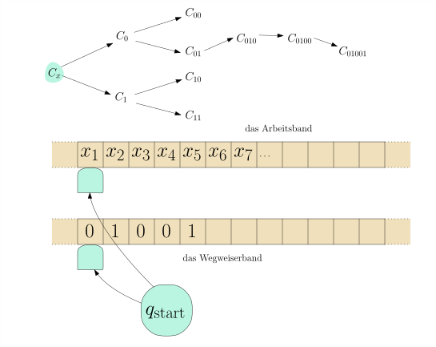
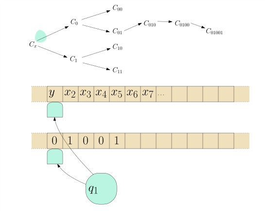
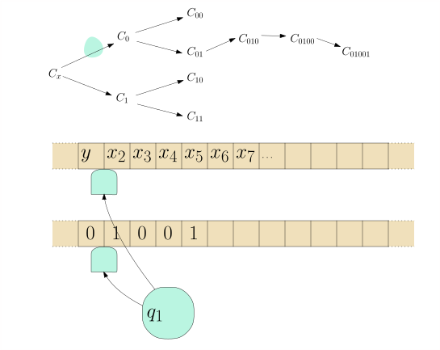
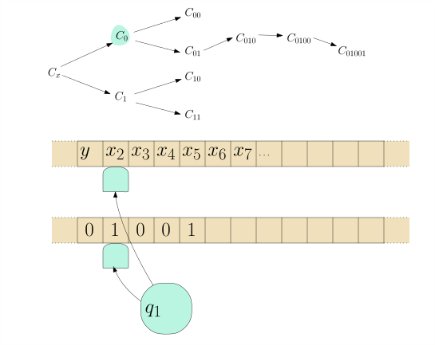
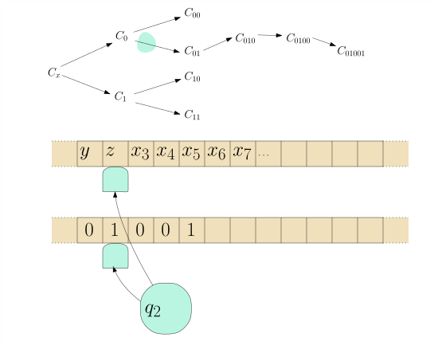
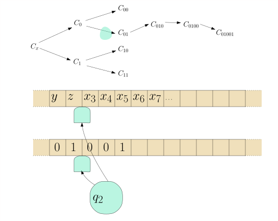
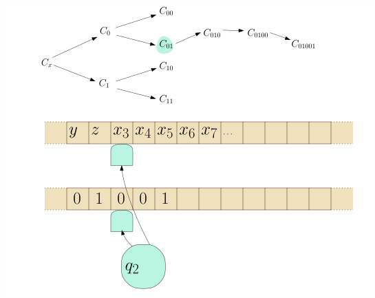
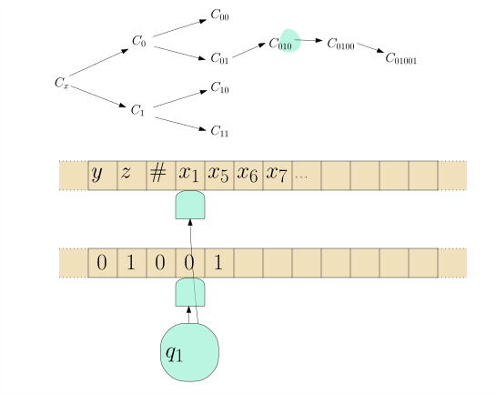
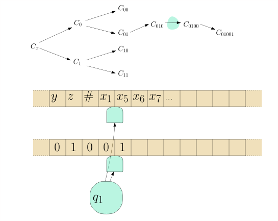
Nun bauen wir schlussendlich eine Maschine $M'$, die in einer Endlosschleife alle möglichen $z \in \{0,1\}^*$ aufzählt, auf das zweite Band schreibt, und $M''$ neustartet. Geht das? Wir können zum Beispiel $i = 1,2,3,4,\dots$ hochzählen, binär schreiben und die führende 1 löschen. Überzeugen Sie sich, dass in dieser Reihe wirklich alle $z \in \{0,1\}^*$ vorkommen.A\(\square\)